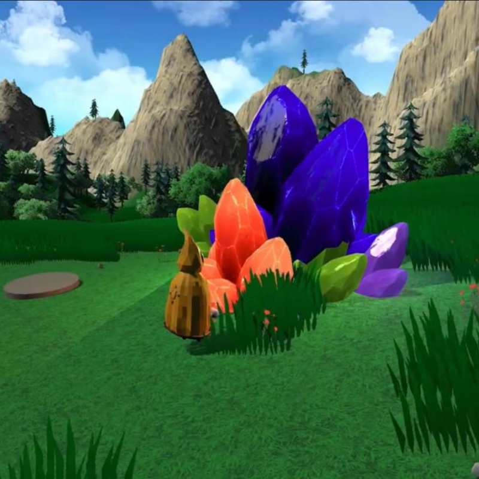

Chroma

When at the University of Porto, I had the opportunity to explore interactive design and storytelling through various projects. This eclectic collection brings together some of my favorites, focusing on generative music, live-reactive visuals, interactive installations, and digital narratives.